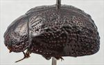
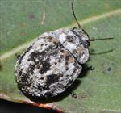
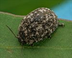
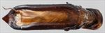
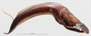
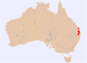

Click on images to enlarge


Male, Moore, S.E. Queensland


Female, Rivertree, N.E. New South Wales


Male, Spicer's Gap, S.E. Queensland


Aedeagus, dorsal view (Rivertree, N.E. New South Wales)


Aedeagus, lateral view (Rivertree, N.E. New South Wales)


Distribution
Name
Trachymela sp. Ta145
Reference specimen
2018-106a, Rivertree, NE New South Wales.
Adult Description
Length: ♂ 7.1–8.0 mm (n=6), ♀ 6.8–8.8 mm (n=12).
Colouration:
- Head: black or very dark brown, if the latter, then often with black clypeus, labrum yellowish-brown, black or partially black, mandibles dark brown with black tips; antennomeres 1–2 light to dark brown, 3–11 black.
- Pronotum: very dark brown or black, concolorous with head, if dark brown, then usually with vague black maculae present on disc along the midline and on each side of midline, a small round black macula present on each side behind eye.
- Scutellum: black.
- Elytra: dark brown or black, concolorous with pronotum, if not black then with many small black areas that coincide with pustules and, rarely, raised interstices, a transversely aligned concentration of these sometimes situated behind antero-median depression and a large black raised area is situated just outside of centre of edge of disc, punctures are concolorous with interstices, humeral callus black.
- Venter & Legs: venter black, inside surface of elytral epipleura black.
- Cuticular Wax: thick to very thick patches of greyish wax interspersed with sparse areas of brown, the brown most apparent as 2 longitudinal bands in marginal area of pronotum and in an interrupted band along anterior elytral margin; there are some areas that are wax-free or almost so: these include the scutellum, a band bordering the elytra from scutellum to summit, a quadrate patch on each elytron extending a short way laterally from summit and a larger, oval patch with its anterior end lining up with previous patch but closer to margin of disc and extending posteriorly from there.
Morphology:
- Shape: relatively narrow and quite evenly curved, greatest height viewed laterally is just in front of middle of elytral margin.
- Head: quite coarsely (pd ≈ 2–3×ef) and somewhat unevenly punctured. Antennae moderately long (AL/BL: ♂ 39–45%, ♀ 32–37%), filiform.
- Pronotum: almost evenly curved transversely, foveal depression absent or poorly developed with a clearly defined and almost round elevated area in middle, discal area uneven with raised regions on each side behind inner edge of eyes, puncturation on disc variable, usually clearly impressed, puncture size variable, noticeably larger anteriorly where it is usually similar in size or fractionally smaller than those on head, unevenly and not very densely distributed with interspersed much finer punctures, becoming much coarser from level of inner edge of eye to lateral margins, interstices somewhat rugose, rarely smooth, in discal area. Thick front margins join thinner lateral margins in a smoothly rounded right-angle, with lateral margin curving smoothly and gradually towards rear margin, becoming noticeably thicker in posterior half.
- Scutellum: smooth and unpunctured.
- Elytra: surface evenly curved transversely, almost straight longitudinally from scutellum to summit, then curvature becomes convex from summit to apex, the area adjacent to elytral summit is smooth and very slightly elevated, a very shallow depression extends across surface just in front of middle, punctures very large and distinct and relatively evenly distributed between the verrucae, verrucae are mostly discrete, circular or oval, not aligned in longitudinal series, prominently elevated, some with fine punctures in centre, verrucae just posterior to antero-median depression sometimes partially joined by transverse ridges, posterior third of marginal area slightly to prominently concave, surface continuous or very slightly discontinuous under humeral callus. Vertical extension of epipleura small (HCE/PW = 0.29–0.33).
- Venter: prosternal process usually broad, strongly expanded anteriorly or less often parallel-sided or even narrowest anteriorly, open or closed anteriorly, setae scattered over prosternal process and mesoventrite, a single seta on anterior and median trochanter; front edge of metaventrite beveled, truncate.
Male Genitalia (Aedeagus):
- Dimensions: moderately long (LPE = 33–37% BL).
- Dorsal view: shaft almost parallel-sided over most of its length, widening fractionally towards widest point about 25% of length from apex, then curving smoothly inwards to converge at apex, spatula is prominent and triangular, dorsal surface lightly sclerotized with dorso-median channel very faint, dorsolateral channels long and well-defined; tip protruding, large and triangular, ostium large, the dorsal ostial processes extend to its apical edge when extended.
- Lateral view: shaft slightly curved from base until shortly before apex, where curvature increases noticeably, thinning towards apex over 20% of length, tip strongly deflexed, flagellum thin and loosely spiraled.
Immature Stages
Unknown.
Similar species
- Ta83: There is little that distinguishes this species from Ta145, except for the shorter aedeagus with its blunter apex. The pattern of cuticular wax is almost identical in these two species.
- Ta57: This species is superficially similar with its multi-coloured coating of wax. However, it is somewhat smaller, and its elytra appear much smoother, with its verrucae less elevated. The epipleura of Ta57 are considerably further extended below the humeral callus than in Ta145.
Notes
- Distribution & Abundance: Ta145 is rarely collected, but was abundant at one site at Rivertree, northern NSW. Males are similar in size to females.
- Host Associations: At Rivertree, northern NSW, specimens were feeding on both Eucalyptus crebra and E. melanophloia (Symphyomyrtus: Adnataria). These hosts are also almost exclusively recorded from other sites, with the exceptions being two specimens on stringybark (see below).
- Morphological Variation: Two female specimens collected at separate occasions in the Conondale Range area, one from Yednia (collected from a stringybark species) and the other from Bouloumba Creek (host not recorded), very likely constitute a different species. The sculpture of the elytra is of a somewhat different form (the verrucae are more prominent and more isolated) and the antennae of the Yednia specimen are uniformly mid-brown throughout and do not show the gradual drop in length from antennomeres 4–10 that are characteristic of typical Ta145 females.
Copyright © 2026. All rights reserved.